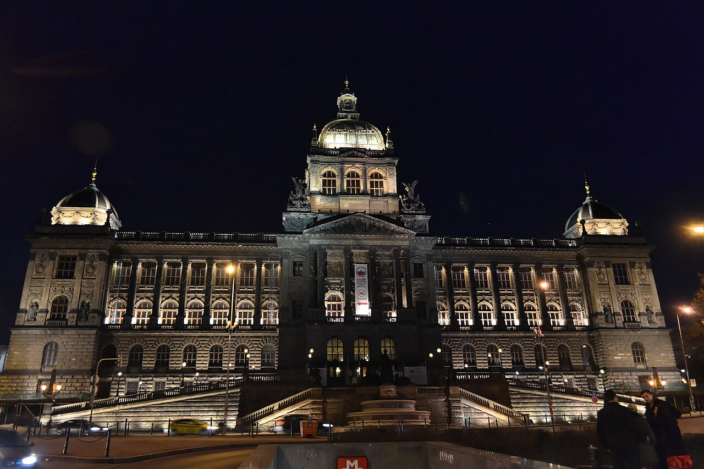
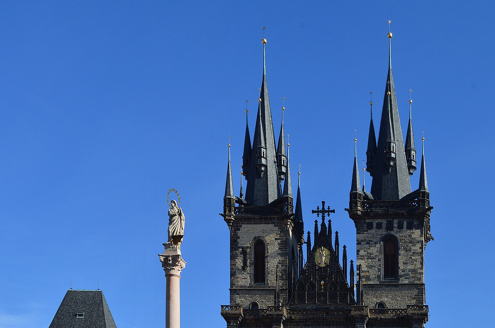

Исторические и справочные гербы


Prague
Путеводитель. Объектов в этом выпуске: 39.
OTIUM — практика нарочитого досуга. В античном смысле otium — не побег от работы, а время, когда внимание возвращается к памяти, пейзажу и мысли — без прикладного дедлайна.
Мы выстраиваем маршруты для неспешного присутствия, а не для чек-листа достопримечательностей: важно быть в месте, а не «потреблять» виды.
OTIUM — не туроператор. Это приглашение пройтись, остановиться и оставить маршрут незавершённым, если свет на фасаде заслуживает ещё минуты.
Исторические и справочные гербы
Путеводитель. Объектов в этом выпуске: 39.
Прага — столица Чехии, политический и культурный центр страны на реке Влтаве.
Княжеский и королевский город Священной Римской империи, столица Чехословакии и Евросоюза на перекрёстке Германии и Славии. Градчаны, Карлов мост и барокко контрастируют с модерном и современной архитектурой.
Вторая мировая война и оккупация, 1968 и «бархатная» революция 1989 года определили память о свободе. Вступление в ЕС и НАТО закрепило западную ориентацию; Прага сочетает туризм, автопром и сервисы как столица Средней Европы.
Adalbert of Prague Church, NE, 2017 Hatvan.jpg

Bazilika sv. Petra a Pavla

Neo-Gothic basilica with striking twin spires inside the Vyšehrad fort—associated with the Czech national cemetery Slavín nearby.
Older church on site; present form largely 19th-century reconstruction with Art Nouveau interior painting.
Vyšehrad is a legendary “first Prague castle” in medieval chronicles and a quiet park above the river.
Karlův most

A medieval stone bridge lined with statues, now a pedestrian spine between the castle side and the Old Town. Early mornings and late evenings are quieter for crossing.
Founded in 1357 under Charles IV; the Baroque sculptures were added from the late 17th century onward. The bridge has been repaired after floods and military action.
The iconic image of Prague in travel literature and a daily route for residents as well as visitors.
Pražské Jezulátko

Церковь Вознесения Девы Марии (Кржижовnická kaple), также известная как Церковь нашей Владычицы Победоносной, была построена в середине XVI века в стиле поздней готики и ренессанса. Здание стало важным памятником архитектуры Праги благодаря своему уникальному экстерьеру и интерьеру, украшенному живописью и скульптурами эпохи Ренессанса. Особо выделяется алтарь работы Яна Брокофа, созданный в XVII веке.
Церковь привлекает туристов своей уникальной архитектурой и богатым внутренним убранством, отражающим историю искусства и религии Чехии.
Tančící dům

A deconstructivist office building by Frank Gehry and Vlado Milunić, nicknamed “Fred and Ginger” for its paired curved volumes.
Completed in 1996 on a site cleared by WWII bombing; controversial at first, now a postcard favourite.
Represents post-1989 architectural openness on the riverside.
Kampa a Karlův most

Park-like island by the river: willows, museum of modern art at one end, and classic views back toward the Charles Bridge arches.
Former mills and gardens; gradually landscaped for public leisure from the 20th century.
Calmer riverside space minutes from the dense tourist core.
Palác Kinských

Кински дворец расположен на Староместской площади Праги, одной из старейших площадей Европы. Построен в XVII веке по заказу влиятельного чешского аристократического семейства Кински. Здание стало символом эпохи барокко и до сих пор сохраняет величественный облик благодаря архитектуре Франтишека де Шонбека.
Дворец привлекает туристов своей уникальной архитектурой и историческим значением, являясь важной частью архитектурного ансамбля Старого города.
Lennonova zeď

A wall covered in graffiti, lyrics, and messages—once an unofficial memorial after John Lennon’s death, now repainted freely by visitors.
In the 1980s youth wrote protest lyrics here under communist censorship; ownership and repainting cycles continue today.
Symbol of free expression in Cold War Prague and a tourist stop near Kampa.
Metronom na Letné

Метроном Летна — символ Праги, установленная в парке Letná в 2006 году скульптура-метроном работы Йиржи Блажека. Идея принадлежит архитектору Яну Котлебу. Метроном символизирует ритм жизни города и служит важной городской достопримечательностью.
Символ ритма и динамики современной Праги, популярная туристическая достопримечательность.
Letná

Летнский парк является одной из старейших и популярнейших зон отдыха Праги, основанной ещё в XVIII веке. Со смотровой площадки открывается живописная панорама города, особенно впечатляющая вечером благодаря подсветке знаменитых пражских мостов и зданий.
Смотровая площадка Letná Park предлагает захватывающий вид на исторический центр Праги, включая Карлов мост, Староместскую площадь и Пражский Град.
Klementinum

Зеркальная капелла является частью комплекса Клементинум в Праге и была построена в XVII веке по указанию императора Фердинанда II. Здание выполнено в стиле барокко и предназначалось для хранения ценных книг и манускриптов императорской библиотеки. Капелла получила своё название благодаря уникальному зеркальному куполу, который отражает свет и создаёт удивительное визуальное впечатление.
Капелла привлекает туристов своей уникальной архитектурой и атмосферой старинной библиотеки, позволяя почувствовать дух эпохи барокко.
Obecní dům

Art Nouveau concert and civic hall: façade mosaics, Mucha-decorated interiors in places, and the main home of the Prague Symphony Orchestra.
Built 1905–1912 on the site of the former royal court; the Czechoslovak independence was declared here in 1918.
Prime example of Czech Secession architecture and a working performance venue.
Národní muzeum

Neoclassical museum building at the head of Wenceslas Square; collections span natural sciences, history, and arts.
Founded in 1818; the dominant historical building was completed in the 1890s and underwent major renovation in the 2010s.
Flagship state museum and architectural anchor of the square.
National Museum, Prague 2.jpg

Národní technické muzeum

Национальный технический музей Чехии основан в 1908 году по инициативе инженеров и предпринимателей страны. Изначально музей размещался в здании бывшего монастыря Святых Клары и Доминика, позже переехал в современное здание на Вацлавской площади, построенное в стиле функционализма в 1964 году архитектором Йозефом Гочаром. Музей стал первым техническим музеем Центральной Европы и сегодня является крупнейшим научно-техническим учреждением Чехии.
Музей привлекает посетителей уникальной коллекцией технических достижений человечества, начиная от древних механизмов до современных технологий.
Národní divadlo

Национальная опера и драма Чехии была основана в 1862 году и расположена в историческом здании на Вацлавской площади Праги. Театр стал символом национального возрождения чехов после подавления восстания 1848 года и сыграл ключевую роль в культурной жизни страны. Среди известных постановок выделяются оперы Беллини и Верди.
Национальный театр является крупнейшим культурным центром Чехии и важнейшим местом проведения опер, балетов и драматических спектаклей.
Nizwa 006 (30816611472).jpg

Rašínovo nábřeží

Налубская плотина («Налубка») была построена в конце XIX века инженером Карелом Раушем и стала важным инженерным сооружением Праги. Сооружение сыграло ключевую роль в защите города от наводнений и позволило значительно расширить территорию застройки вдоль реки Влтавы.
Пешеходная зона Нáплaвкa является популярным местом прогулок среди местных жителей и туристов благодаря живописной набережной и великолепному виду на исторический центр Праги.
Starý židovský hřbitov

Layered gravestones crowded on a small plot—one of Europe’s oldest surviving Jewish burial grounds, now part of the Jewish Museum circuit.
Used from the early 15th century until 1787; because space was tight, earth was added and stones overlap in depth.
A poignant record of the Prague Jewish community before modern urban clearance and Holocaust losses.
Staroměstská radnice

Gothic tower and administrative complex; the astronomical clock is on its southern face. The tower offers views over the red roofs of the Old Town.
Origins in the 14th century; the Gothic tower and chapel are the most prominent surviving medieval parts after wartime damage and rebuilds.
Seat of Old Town self-government for centuries and a landmark silhouette on the square.
Staroměstské náměstí

The main square of the Old Town: Týn Church, the Old Town Hall with the astronomical clock, cafés, and seasonal markets.
The square grew from a market place; public executions, coronation processions, and modern protests have all left their mark on its memory.
Social and ceremonial heart of the historic centre and a starting point for many walking routes.
Petřínská rozhledna

A steel lookout tower inspired by the Eiffel Tower, smaller but placed high on Petřín hill for sweeping views over Prague.
Built for the 1891 Jubilee Exhibition; carried up the hill by funicular or footpaths.
Favourite panorama point and a recognizable silhouette from the city below.
Prašná brána

A Gothic gate-tower that was once one of the entrances to the Old Town; decorative stonework rises above pedestrian traffic.
Built in the 15th century; used for gunpowder storage at one time, hence the name. Linked visually to the route toward the Old Town Square.
Landmark boundary between Old and New Town and a backdrop for coronation processions of old.
Pražský orloj

A medieval clock with an astronomical dial, apostles in the windows, and the famous skeleton figure (“Death”) ringing the bell.
The mechanism dates from 1410 (astronomer Jan Šindel and clockmaker Mikuláš of Kadaň); later layers added the calendar and figurine show.
One of the oldest operating astronomical clocks and a symbol of Prague craftsmanship.
Botanická zahrada Troja

Пражский ботанический сад Троя основан в 1956 году и является крупнейшим научным учреждением подобного типа в Чехии. Сад расположен недалеко от Праги, в живописной местности, окружённой лесами и холмами. Это место стало популярным среди учёных и туристов благодаря уникальной коллекции растений и разнообразию флоры Центральной Европы.
Ботанический сад Троя — важный научный центр и популярное место отдыха жителей и гостей Праги, где можно насладиться красотой природы и узнать больше о растительном мире региона.
Pražský hrad

A fortified hilltop complex: palaces, churches, and gardens overlooking the city. St. Vitus Cathedral dominates the skyline from many viewpoints.
The site has been a seat of power since the 9th century; major phases include Gothic, Renaissance, and Baroque rebuilding under successive rulers.
Historic residence of Bohemian kings and the modern Czech president; UNESCO-listed with related urban zones.
Praha hlavní nádraží

Art Nouveau terminal behind a historic façade; the glass dome of the new hall is visible from the street approach.
Opened in its present form in the early 20th century; later modern additions handle high-speed and international traffic.
Main rail gateway to the city and an interior worth a quick look even if you are not travelling.
Prague Old Town 2021 13.jpg

PragueCathedral03.jpg

Kostel sv. Mikuláše

Baroque church with a pale green dome and rich interior stucco; organ concerts are frequent in the tourist season.
Built in the 18th century on the site of a Gothic predecessor; associated with Jesuit patronage.
One of the finest Baroque church interiors in Prague and a dominant of Malá Strana square.
Katedrála sv. Víta

The metropolitan cathedral of Prague: soaring nave, stained glass including Alfons Mucha’s window, and the St. Wenceslas Chapel.
Construction began in 1344 under Charles IV; the cathedral was only finished in the 19th and early 20th centuries with Neo-Gothic completion work.
Coronation church of Bohemian kings and the burial place of several saints and rulers.
Strahovský klášter

Premonstratensian monastery with a famous library hall and church towers visible from Petřín and the castle approaches.
Founded in the 12th century; library and theological collections grew through the early modern period.
Important manuscript collections and Baroque library interiors (visiting rules vary).
Královská obora

Стромовка — королевский охотничий заповедник, основанный в середине XIX века для императорской семьи Богемии. Здесь сохранились уникальные природные ландшафты и редкие виды животных, ранее обитавшие исключительно в дикой природе Чехии.
Парк Стромовка интересен любителям природы и истории, ценящим возможность увидеть редкие виды животных и растений в естественной среде обитания.
Trojský zámek

Baroque château with formal terraced gardens stepping down toward the Vltava; Prague Zoo is just uphill.
Built for the Sternberg family in the late 17th century; garden statuary and staircases follow Italianate models.
Popular half-day trip combining palace interiors, gardens, and zoo or botanic garden.
Vratislavský palác.JPG

Slavín

Кладбище Вршад расположено на холме Высогат, являющемся одной из знаковых достопримечательностей Праги. Основанное в XIX веке, оно стало первым городским кладбищем столицы Чехии. Здесь покоятся выдающиеся деятели культуры, науки и политики, включая известных композиторов, писателей и общественных деятелей.
Кладбище привлекает туристов своей атмосферой и историческими памятниками, среди которых выделяется часовня Святого Вацлава.
Valdštejnská zahrada

Валенштейнский сад был заложен в середине XVII века по приказу Альбрехта Валленштейна, влиятельного полководца и политика эпохи Тридцатилетней войны. Это один из первых регулярных садов Чехии, выполненный в стиле барокко, который сочетает элементы французского и итальянского садового искусства. Сад стал символом могущества и власти своего создателя.
Знаменитый парк привлекает туристов своей уникальной архитектурой и ландшафтным дизайном, сочетающим симметрию и гармонию. Здесь можно увидеть впечатляющие фонтаны, скульптуры и живописные аллеи.
Václavské náměstí

A long boulevard-like square with the National Museum at its upper end and the equestrian statue of St. Wenceslas below.
Named and reshaped in the 19th century; site of key moments in 20th-century Czech history including 1968 and 1989 gatherings.
Commercial artery and traditional place for public demonstrations and national holidays.
Žižkovská věž

Телебашня Жижков построена в 1992 году как символ новой эпохи после падения коммунизма в Чехословакии. Башня высотой 216 метров стала первой телебашней в Праге и самой высокой архитектурной доминантой города. Архитектор Йиржи Шмидт спроектировал башню в стиле постмодерна, вдохновляясь традициями пражского барокко.
Жижковская башня привлекает туристов своей необычной архитектурой и панорамным видом на город.